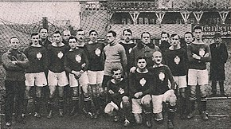

Pierwsze kroki
 Reprezentacja Polski w piłce nożnej mężczyzn – drużyna piłkarska reprezentująca Rzeczpospolitą Polską w zawodach międzynarodowych. Za jej funkcjonowanie odpowiedzialny jest Polski Związek Piłki Nożnej, organ zarządzający piłką nożną w Polsce. W reprezentacji mogą występować wyłącznie zawodnicy posiadający obywatelstwo polskie.
Reprezentacja Polski swój pierwszy mecz międzypaństwowy rozegrała w 1921 przeciwko Węgrom. Głównym stadionem, na którym podejmuje rywali w roli gospodarza, jest obecnie Stadion Narodowy w Warszawie. Z kolei jedynym obiektem posiadającym nadane przez PZPN miano narodowego jest Stadion Śląski w Chorzowie.
Polska bierze udział w rozgrywkach Pucharu Świata FIFA (mistrzostw świata) oraz mistrzostw Europy UEFA (EURO), które odbywają się naprzemiennie co dwa lata. Uczestniczyła w ośmiu z dwudziestu jeden turniejów finałowych MŚ oraz w czterech z szesnastu turniejów finałowych ME. Najlepszym wynikiem Polski w turnieju FIFA jest dwukrotnie trzecie miejsce osiągnięte w 1974 i 1982, a w ME – ćwierćfinał w 2016. W 1974 polski napastnik Grzegorz Lato został królem strzelców MŚ (7 trafień). W 2012 Polska wraz z Ukrainą organizowała Mistrzostwa Europy.